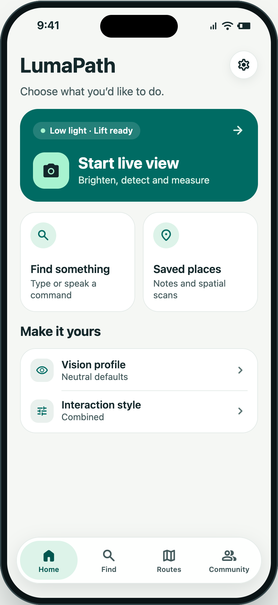
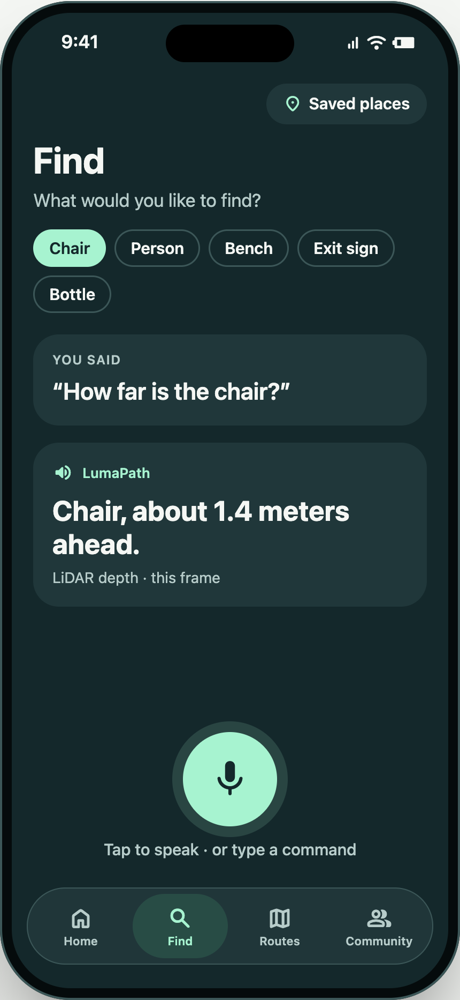
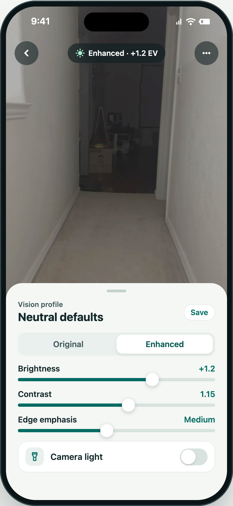
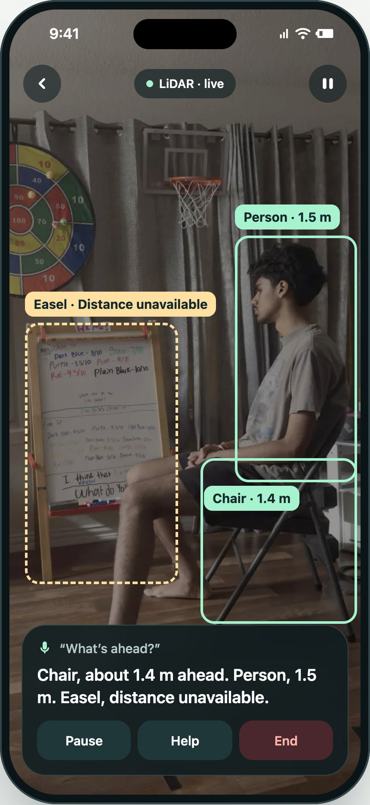
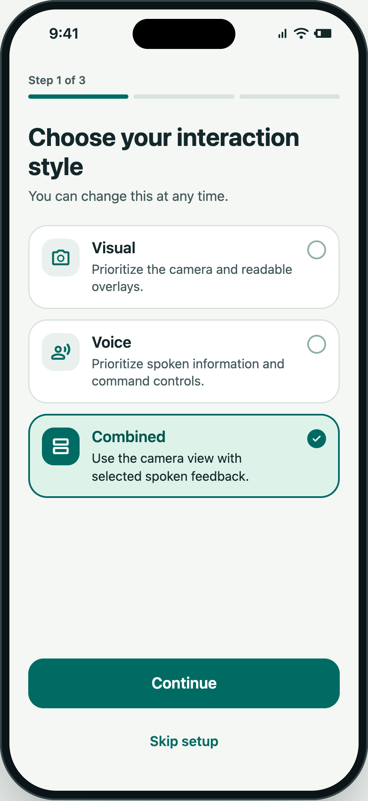
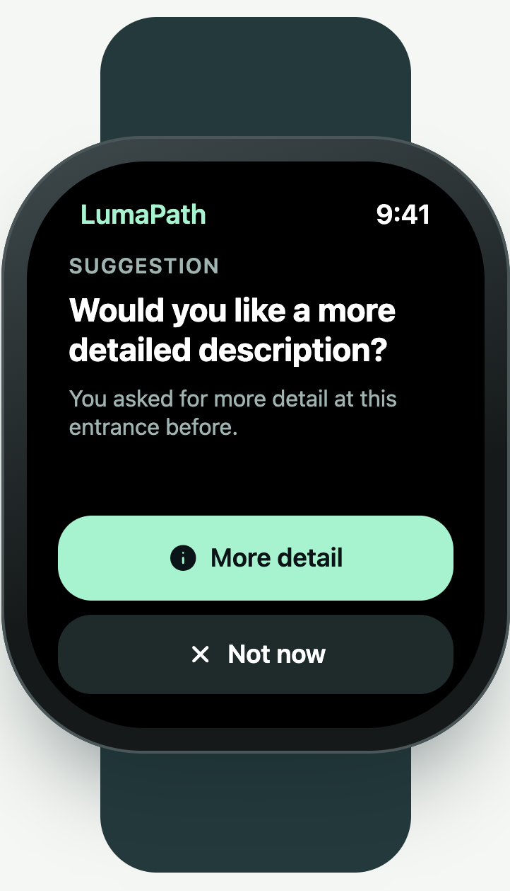

A look inside LumaPath
Camera tools, readable information, and flexible interaction styles on iPhone, with an optional Apple Watch companion.
These are illustrative interface mockups. Example scenes, measurements, and Watch cues are not validated sensing results. For the implemented interface, see the native simulator captures.

Home
Camera tools, Find, and saved places in one place.

Find
Typed or spoken requests with readable answers.

Camera tools
Adjust brightness, contrast, and edge emphasis.

Objects and distance
Object labels paired with distance information when available.

Interaction preferences
Visual, Voice, and Combined presentation styles.

Apple Watch companion
A compact view of optional research feedback.